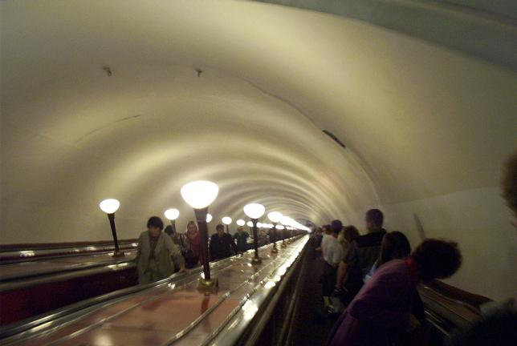
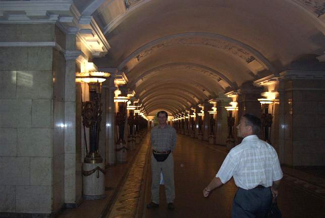
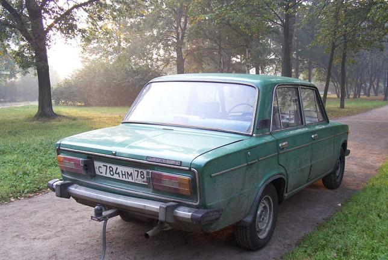
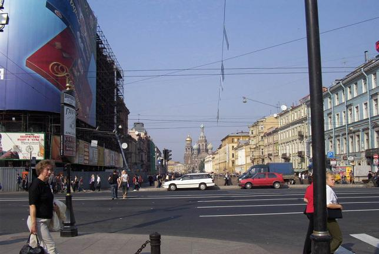

As is the case in Moscow, the subway system in St. Petersburg was built very deeply and with stations that are exceedingly cavernous because they are meant to provide underground shelter to the population against possible aerial bombardment.


The third picture is of a typical Russian automobile of the
ancien régime, a Lada.

The fourth picture is of Nevisky Prospekt, St. Petersburg’s most famous avenue, with a canal and at the back of it the Church of the Resurrection of Christ.

Continue to City Snapshots, Part 2
Back to St. Petersburg Section
Go to the Homepage